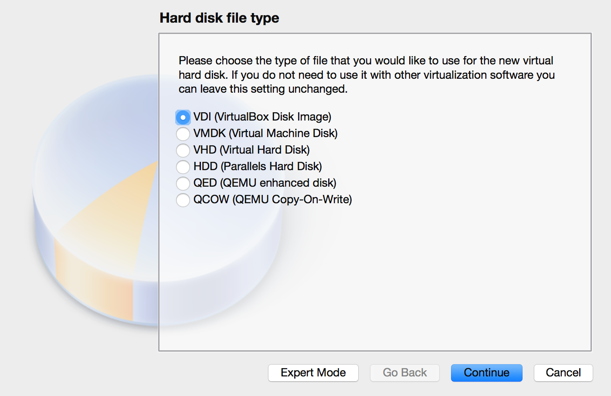
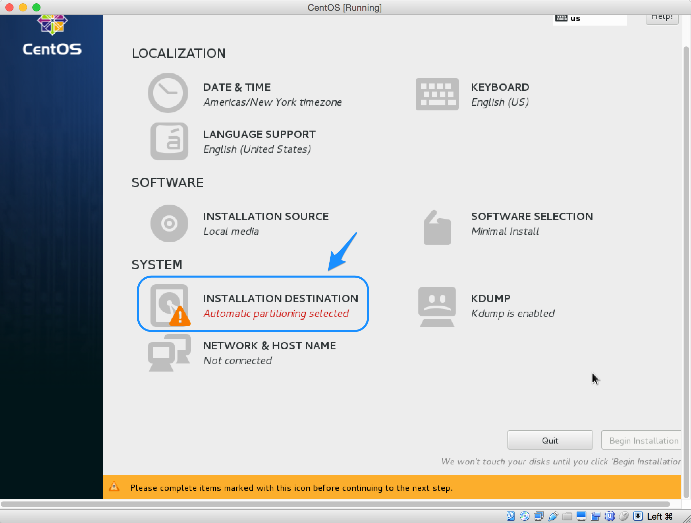
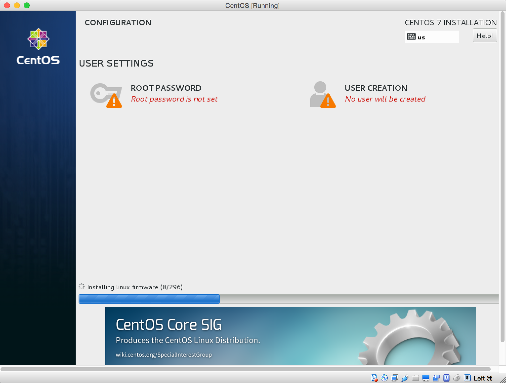
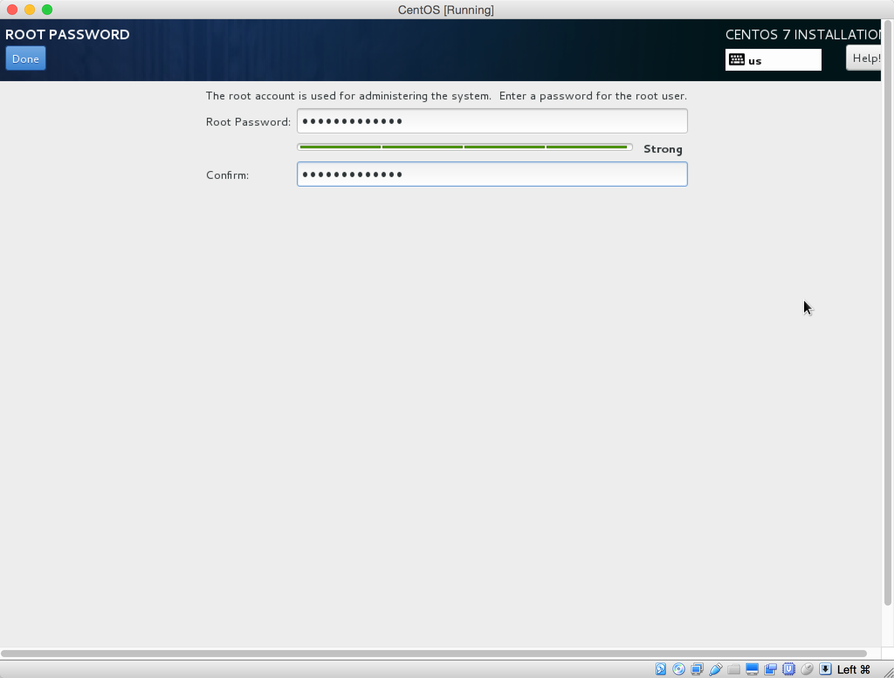

How to set your Linux virtual machine
This chapter will introduce how to set up a Linux(CentOS) virtual machine in your own laptop.
Softeware needed
There are several free virtual machine softwares while I recommend you below two:
- vmplayer
- VirtualBox
Linux Distribution Selection
I recommend you use CentOS 7 for you learning
CentOS 7 Img Download
This chapter will take VirtualBox for virtual machine software and CentOS 7 for OS as an example.
Installation
Just follow the guidance of the software.
How to install your Linux
Here we just install a minimal system without any graph interface. In this way, you will be forced to only use commands for all tasks.
- Open your virtualbox
-
New a virtual machine

-
Name it whatever you want and select the type and version of OS you want to install
-
Assign the amount of memory you want to assign to the virtual system. I think 768MB is enough for our learning.

-
Create a virtual hard disk for your system(this will be a file/or several files stored on your physical disk which contain(s) all things of your VM)
-
Choose virutal disk type(as we only use this VM on VirtualBox, we can use the default type) 
-
Always choose
Dynamically allocated. In this way, the VM disk file will start with a very small size and increases to a top size you will specific in the next step.
-
Choose the
max sizeof your VM disk
Now we have a virtul machine without any OS in it, which means we cannot communicate with it. Let's install CentOS 7 in this VM.
-
Right click the VM you just created and open
settingspanel.
-
Change to
Storagetap and set theController:IDEto the path where you store your CentOS img you just downloaded.
-
Now you can start your VM. Select the VM and click
Startat the top right. -
After a few seconds, the installation process will begin.
-
Use your keyboard
UpandDownand chooseInstall CentOS 7and clickReturnbutton on your keybaord. -
Select
INSTALLATION DESTINATIONand do some settings.  -
Select
AUtomatically configure partitioningon the bottom and clickDoneon the very top.
-
Click
Begin Installation
-
Set password for your root user(root is the super Administrator user accound and has full permission on your Linux) 
-
Set the password for root. 
-
Create another user account if you want.

-
Finish your configuration
-
Reboot

- Now you have your own Linux, use your account settle just now and you can practise your Linux skills.

What's next ###
If you can stand the inconvenient (cannot copy and paste) then you can begin your trip from here
If you cannot stand, refer here to set up your environment so that you can use PuTTY to connect to your server.